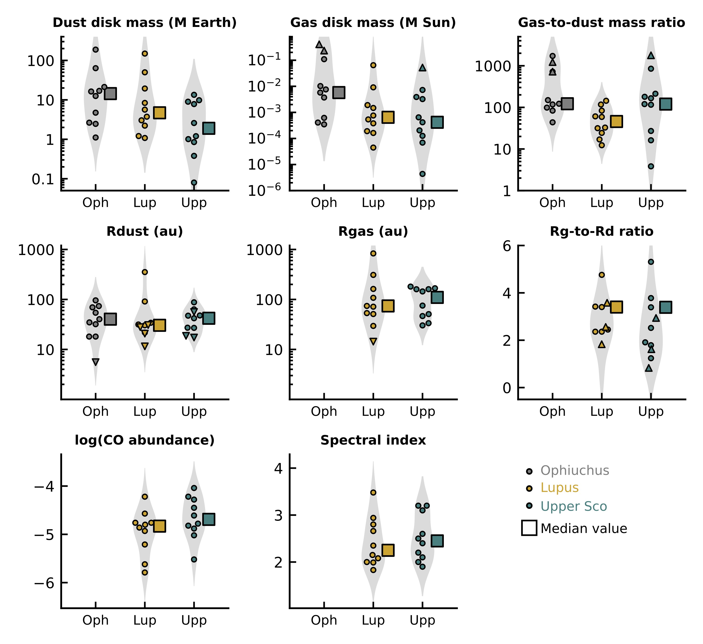
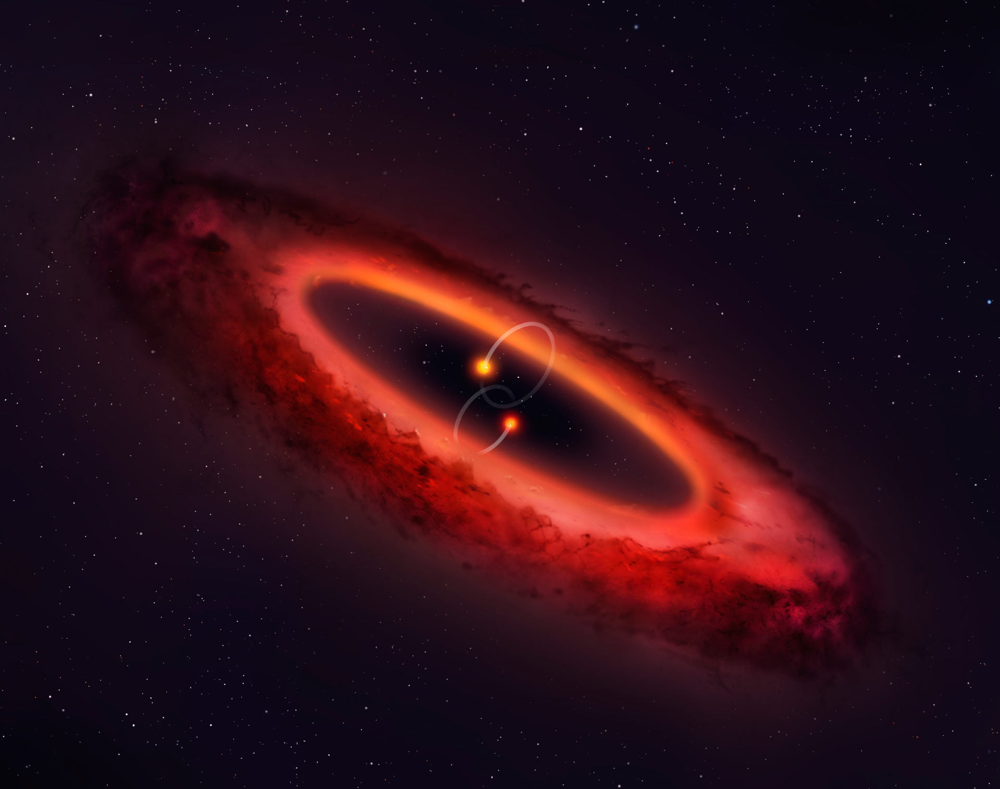
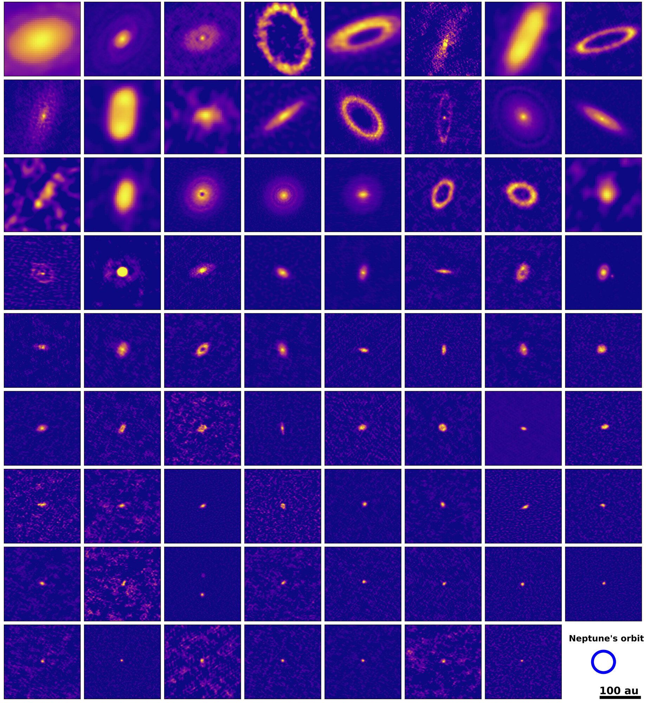

My work focuses on the formation and evolution of protoplanetary disks. During my master I analyzed multi-wavelength dust continuum emission data from ALMA, to derive dust properties of the disks in the AGE-PRO survey. The results allowed us to understand how the dust component of protoplanetary disks evolves with time.
During my PhD, I will study the continuum and line emission of circumbinary disks, aiming to understand how is the planet formation process in this kind of objects.
I also joined the DMOST team. DMOST (Disks around the MOST common stars) is an ALMA Large Program designed to quantify key physical properties of disks around very low mass stars (VLMS).
